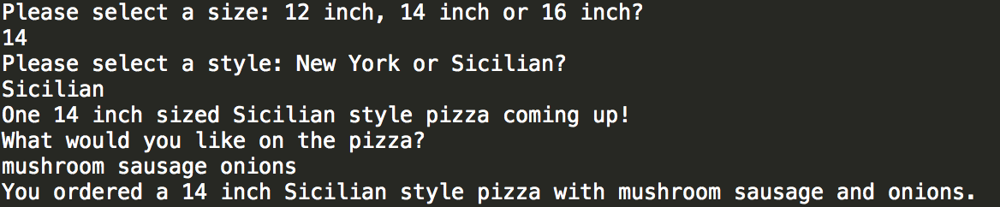

Ruby Classes
A look into classes, instance variables and instance methods
2015-05-30

Introduction
In Ruby, most everything you work with in a program is considered an object. A class holds a collection of methods that you define when you create the Class. The object you create from a Class is referred to as an instance of the class, and has access to all the methods defined within the Class. A method defined within a class is called an Instance Method, and variables created within the Class are called Instance Variables. Instance Methods can be utilized by any object of the Class, and Instance Variables can be used throughout the method definitions of the Class.
The instance variables are properties or attributes you want the object to have and the instance methods are what you want the object to do. For example, a Vehicle class may have the instance variables color, model, make and the instance methods drive, accelerate, stop, reverse.
PIZZA Class!
Here's a simple example of how a class, object and method are set up using PIZZA as our class name and object.
class Pizza #1 attr_accessor :size, :style, :toppings #2 def initialize #3 @size = size #4 @style = style @toppings = [] end
- This creates a class named Pizza
- Then, the attr_accessor creates read/write instance variables for size, style and toppings. This lets you decide if the variables can be set to something different later on in the methods.
- The first method you need when creating a class is an initialize method. This allows you to create object from the class, and tells the new object what it can do and what variables it has when it's first created (i.e. intialized).
- The @size, @style and @toppings are instance variables. Instance variables are always preceded by an @ symbol. Size and style are set to themselves, and @toppings is set to an empty array that will be filled in one of the instance methods.
We've initiated our class Pizza with instance variables size, style and toppings, now it's time to give it some methods! What are some methods a Pizza object might have? I came up with some of the following, but I'm sure there's tons more it can do. Take a look at my list, what more could we add?
- Pizza#select_size
- Pizza#select_style
- Pizza#add_toppings
- Pizza#cut_slices
- Pizza#eat_slices
If we were to start with the two, #select_size and #select_style, they could look like this:
...continued from above
def select_size
puts "Please select a size: 12 inch, 14 inch or 16 inch?"
@size = gets.chomp
end
def select_style
puts "Please select a style: New York or Sicilian?"
@style = gets.chomp
puts "One #{@size} sized #{@style} style pizza coming up!"
end
Now we start to see how cool instance variables are. Notice how I assigned @size in the method Pizza#select_size, but then used it again in Pizza@select_style? This is because instance variables can be used in any method you create within the class if they are initialized at the beginning. If we had used a regular variable in select_size, we could not use it again in a new method and its scope would be limited to where it was first defined.
Now let's add the toppings! This is just one way I found to do it, and I'm sure there are many different options. I also considered running the toppings in as arguments, but I wanted it to be more user-interactive so I used gets.chomp method to assign the toppings variable to what ever the user wanted.
def add_toppings
puts "What would you like on the pizza?"
toppings = gets.chomp
@toppings = toppings.split(" ")
if @toppings.count == 2
@toppings = @toppings[0].to_s + " and " + @toppings[1].to_s
elsif
@toppings.count > 2
@toppings = @toppings.insert(@toppings.size - 1, "and").join(" ")
else
@toppings = @toppings.join("")
end #End if statement
puts "You ordered a #{@size} inch #{@style} style pizza with #{@toppings}."
end
There's a lot going on in this one! Basically, I tried to make it so the user's response would be assigned to the local variable toppings so that it could be split into an array and assigned to the instance variable @toppings. Then I check to see if the @toppings array has exactly two items, if it does, I assign the @toppings variable to the joined string of those two items, joined by the word "and". If it's greater than two, then I create a new string that inserts "and" before the second to last item. It's a little messy because I don't have commas in the right place with greater than 2 items, but for now it is my "Minimum Viable Product". Some time when I'm more proficient with Ruby, I'll revisit and see how to clean this method up so my imaginary pizza customers see a grammatically pretty output.
Here's the output from running these lines:
my_pizza = Pizza.new my_pizza.select_size my_pizza.select_style my_pizza.add_toppings
Thanks for reading!
Additional Resources & References
Ruby Explained: ClassesRuby for Newbies: Working with Classes
Ruby Learning: Writing our own class in Ruby
Ruby Classes and Objects